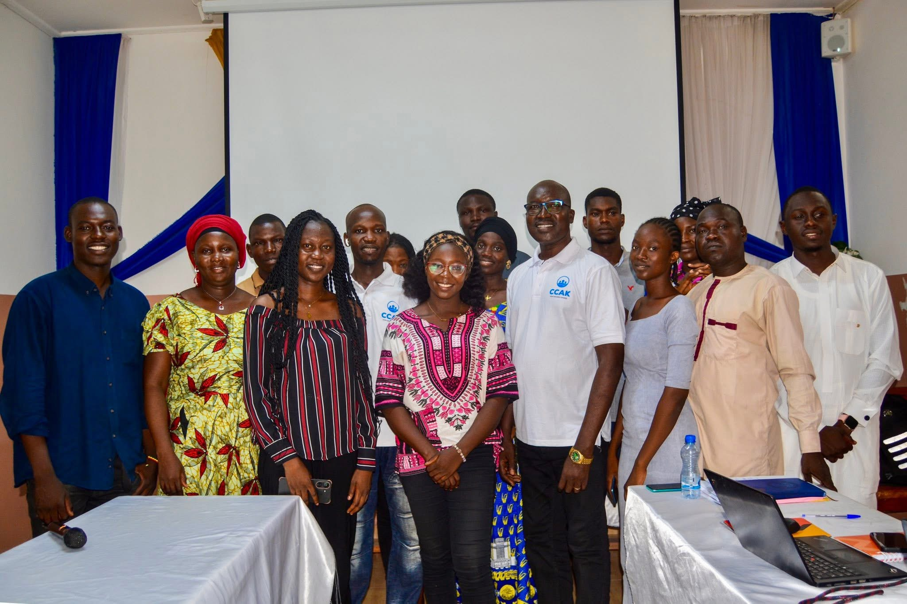

Une expertise indépendante au service de votre protection.
Le Cabinet de Conseils et Courtage en Assurances Keylo (CCAK Assurances) est un cabinet spécialisé dans le conseil, le courtage et l'accompagnement en assurances.
Fondé en 2023, il est agréé par le Ministère des Finances, du Budget et des Comptes Publics suivant l'Arrêté n°118/PT/PMT/MFBCP/SE/SG/DGTCP/DNA/2023 du 15 novembre 2023. CCAK met son expertise au service des particuliers, des entreprises, des ONG et des institutions afin de leur offrir des solutions d'assurance fiables, adaptées et conformes à la réglementation CIMA.

Accompagner nos clients dans la protection de leurs activités, de leurs biens et de leurs collaborateurs grâce à des solutions d'assurances adaptées, performantes et conformes à leurs besoins.
Devenir la référence du conseil et du courtage en assurances au Tchad et dans la sous-région grâce à la qualité de nos services, notre expertise et notre engagement auprès de nos clients.
Honnêteté et transparence.
Respect des standards.
À l'écoute des clients.
Amélioration constante.
Pilotage stratégique et supervision générale.
Animation du réseau et accompagnement clients.
Gestion financière et administrative.
Prospection et suivi des contrats.